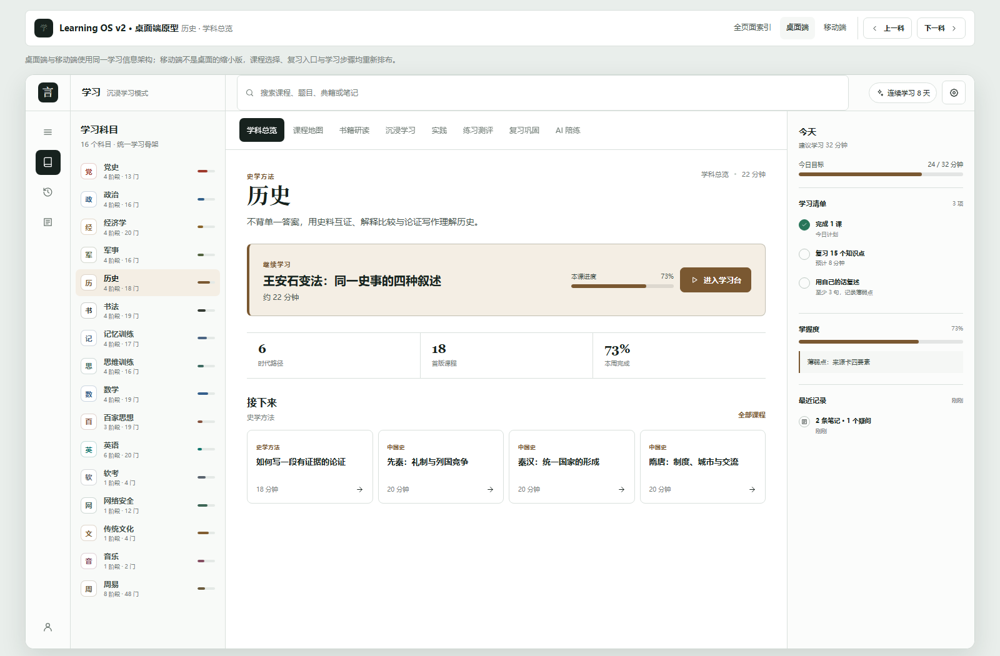
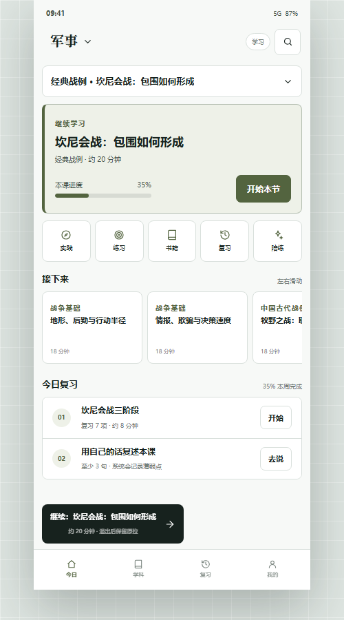

桌面端可交互原型
科目切换、课程地图、沉浸学习、练习反馈、复习与陪练
打开原型
科目切换、课程地图、沉浸学习、练习反馈、复习与陪练

新增 13 个科目，同时重做英语、软考、网络安全、传统文化、音乐与周易。公共图书馆跨科检索所有原文、注释、版本与出处。


19 个科目统一覆盖总览、课程地图、书籍研读、沉浸学习、实践、练习、复习、陪练。课程内容不同，交互骨架不各自发明。
导航层负责选科目、阶段、课程与进度；进入知识点后只保留当前课程、当前步骤、进度与退出。
科目收进顶栏；阶段与课程合并为 App 内浮层；单张继续学习卡；课件横向单轨；高频 CTA 固定在底部。